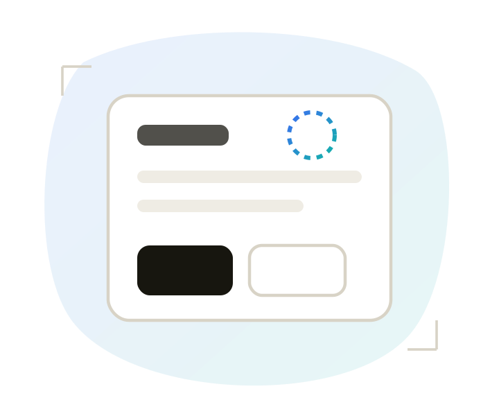
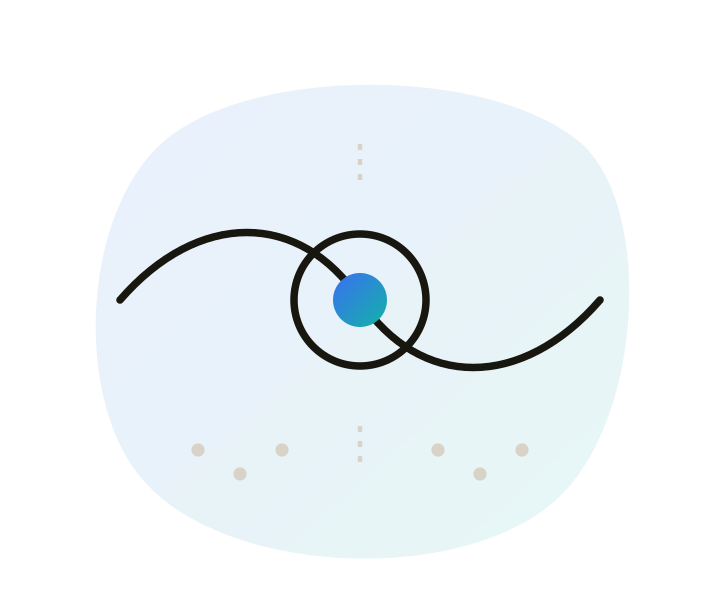
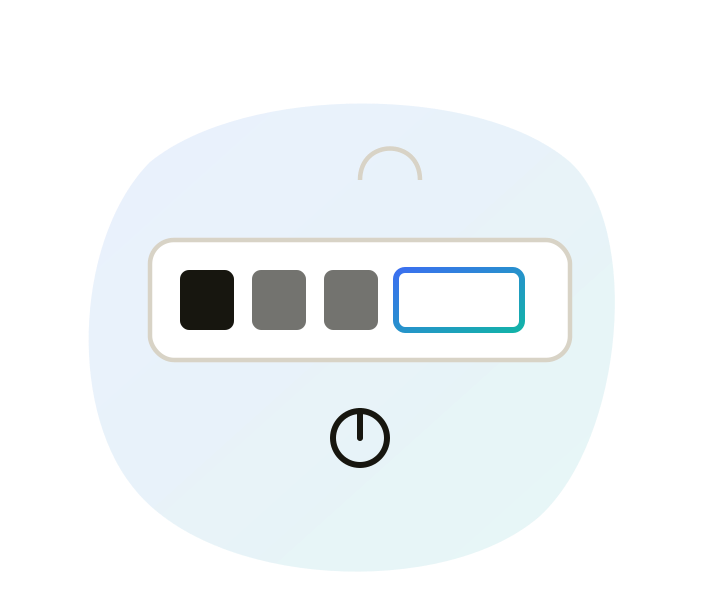
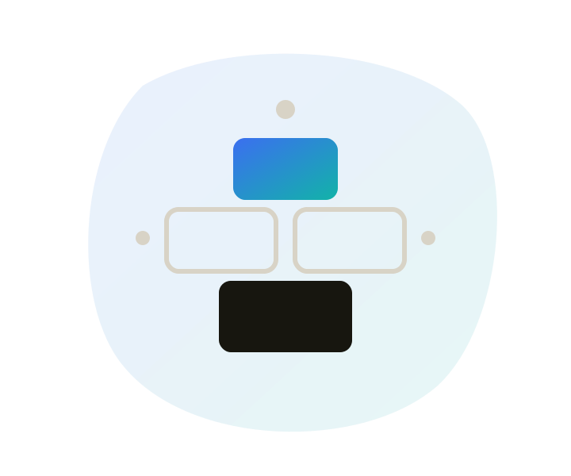

Designing for accessibility
How POUR translates into actual design decisions, and a checklist to design against.

POUR in practice
POUR, Perceivable, Operable, Understandable, Robust, is the foundation of inclusive design. It's abstract as a framework, so here's what each principle actually asks of a design.

Perceivable
Users can process the information on screen regardless of ability, alt text for images, captions for video.

Operable
Every interaction works via keyboard or assistive technology, not just a mouse or touchscreen.
Understandable
Clear language, logical navigation, and error feedback that explains what went wrong.

Robust
Built on standards, not custom solutions that break as assistive technology evolves.
Universal vs targeted design
There are two complementary approaches to designing inclusively, and the strongest designs use both together.
Universal design
Built to work for as many people as possible without adaptation. Adjustable text size or high-contrast modes benefit everyone, not just users with disabilities.
Targeted assistive features
Built for specific needs, screen readers, switch devices. Essential, but meant to complement universal design, not replace it.
Neither approach alone covers everyone. Universal design lowers the bar for the average case; targeted features cover what universal design can't reach.
Design checklist
A working list to check a design against before it goes to development, organised by POUR.
Perceivable P
- Alt text is written for images and icons that carry meaning.
- Time-based media has captions, transcripts, or audio description.
- Structure and reading order are exposed to assistive tech, not just implied visually.
- Instructions don't rely on sensory characteristics alone ("tap the round button").
- Content adapts to device orientation.
- Input fields set the correct type so purpose is clear (email, phone, etc).
- Colour isn't the only way information is conveyed, and contrast meets AA.
- Auto-playing audio can be paused or controlled.
Distinguishable
- Colour contrast and alternate colour modes are checked.
- Text scales with system settings (Dynamic Type / font scaling) without breaking layout.
- The design has been walked through with VoiceOver or TalkBack, not just reviewed visually.
- Custom gestures have a documented, accessible alternative action.